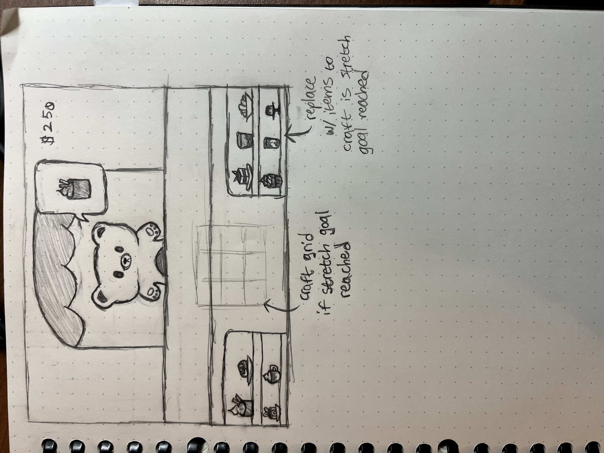

High Concept
As a server, you need to serve food to the correct customer orders. Make a mistake or make the customer wait too long and the cafe will lose money!
Genre
Job Simulation, Casual, Point and Click
Aesthetics
I'm going for a cutesy style with a limited color palette. The main colors will be pastel purple and pastle yellow.
Story
There isn't much of a story. You are just a recent hire at this cafe, Iets Zoets (dutch cafe name; it means Something Sweet).
Documentation
Documentaion PagePlatform
The game will only be playable using a desktop on the web.
Proposed Gameplay
Customers will appear at the window with a text bubble that shows what food item they want to order. After a certain amount of time, the order image will disappear. The more difficult customers will display their order in a shorter time and/or only show the silhouette of their desired food item. To fulfill an order, the player has to click on the right food item. There will also be a time limit of how long the player has to choose an item. To teach players how to play there will be a small instruction guide to the side of the game view.
Actual Gameplay
Time for an order is randomly picked. You have to drag & drop the right food item to the customer's speech bubble to fulfill their order. If you are successful, the cafe earns $5. Otherwise, the cafe loses $2. The order of customer apperances and what they order is randomized.
Mockups
Stretch Goals
To add more to the gameplay, I'd want the players to "craft" the orders with a few ingredients and a Minecraft crafting grid. Additionally, instead of having the guide tutorial to the side of the game view, I'd want a togglable window found in the game view to display the guide.